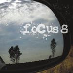

| Artist: | Focus |
| Title: | 8 |
| Label: | Musea FGBG 4472.AR |
| Length(s): | 59 minutes |
| Year(s) of release: | 2002 |
| Month of review: | [02/2003] |
| 1) | Rock & Rio | 3.27 |
| 2) | Tamara's Move | 5.17 |
| 3) | Fretless Love | 6.08 |
| 4) | Hurkey Turkey | 4.15 |
| 5) | De Ti O De Mi | 6.30 |
| 6) | Focus 8 | 6.19 |
| 7) | Sto Ces Raditi Ostatac Zivota? | 5.26 |
| 8) | Neurotika | 3.47 |
| 9) | Brother | 5.39 |
| 10) | Blizu Tébe | 6.38 |
| 11) | Flower Shower (bonus) | 5.41 |
Tamara's Move is much better. Opening with strumming acoustic guitar we also hear the signature flute of Van Leer. Many will be thinking of a more careful Tull here, although the organ is something more typpical for Focus. Hand clapping alternates with hard hitting drums, until the ehtereal vocal part arrives. This is very much in the vein of Sylvia (but with vocals added). One might even be reminded of ELP here at their less bombastic moments. Also here the bombasm sets in, but only to make the reference to Sylvia complete. The guitar solo is a good one, emotive, and we get some grand gestures, but they are effective ones. At the end we can say the music winds down a bit in volume, although the speed does not lessen. We end with Spanish guitar and flute and handclaps.
Fretless Love has a romantic opening: mellow flute, soft acoustics and a mellow melody. On this song the Focus of the early seventies are also strongly felt, although the song also packs an ELP influence or two. Well that might just be me. All in all, what I am missing a bit on this song is coherence. All these bits strung together do not amount to something that can hold my attention, for instance during the long flute solo. After another seventies Focus part, the song continues in up-beat fashion with meandering guitar solo. The keyboard part and phrasing here reminds me of Ray Parker's Ghostbusters.
With Hurkey Turkey we arrive in catchy up-beat territory. The intro to the song reminds me of a Depeche Mode song (can't remember exactly which one). Again a similarity that is striking to say the least. Maybe fortunately for many only the bare melodies and phrasing are known to me, they have all undergone a Focus transformation. The organ and the typical Focus guitar sound (formerly of Jan Akkerman) are as usual very much apparent. Van Leer scats around a bit, the guitar gets to be quite a rocky one later in the track. The theme is a bit simple though.
De Ti O De Mi is a slow opener with cosmic long stretched organ sounds and slow ponderous drums. The mellow side of Focus creeps in with slow and gentle guitar sounds. This I guess is Focus at their most natural, the old mood very well recaptured. Later on, the intensity of the song goes up a bit, but the tempo does not.
Title track Focus 8 has a waltzy opening, hammered piano and a rather striking first theme. Halfway the band varies on the plodding main theme, but the surprise of the opening is gone, only the sharp guitar solo in the middle is good, the remainder is well too obvious.
With Sto Ces Raditi Ostatac Zivota? we move into Easteuropean countries. The opening is atmospheric, in the style of Paul Horn, with some acoustic guitar fast but soft playing along. Vocalizations and organ are added for melody. However, the main part of the song consists of a slow wailing over rather a percussive sounding rhyhtm section. More the type of music one might expect on a Tone Center release.
Neurotika opens well with a nice keyboard run, but the yodels come in right after. I don't think they enrich the song. For the remainder this is one of the more distinctive tracks, mainly because of the tuneful keyboards. The keyboards (combining well with the flute which jogs along) alternate with the slow guitar. Later the guitar rocks a bit more. Quite a good one, in which the energy comes out well. Van Leer gets to be a bit weird, but that doesn't matter here.
With Brother we move into a plodding piece in which the melody is again quite alright. Organ and sensitive guitar take the fore alternatedly, and the flute has its place in the spotlight as well. A bit of a Camel feel, but with a bit too much repetition.
On Blizu Tébe we find again an intimate guitar sound, grounded in blues. The band is going for the grander moments here. Quite a nice one this. Flower Shower is a laugh, which does not mean it is nice to listen to.